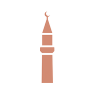

bila

near
near
The next trustworthy jama'ah, and when to leave.
Live times from nearby mosques. Directions when you need them.
Leave in
17 min
Islamic Centre · Dhuhr jama'ah at 13:30
bilalathan.co.uk/near